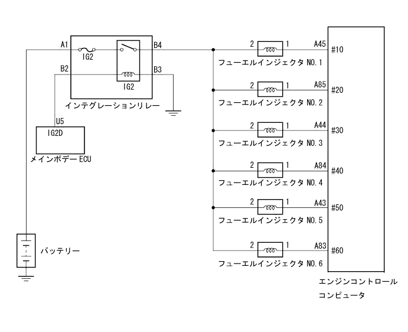
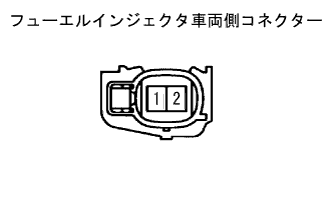
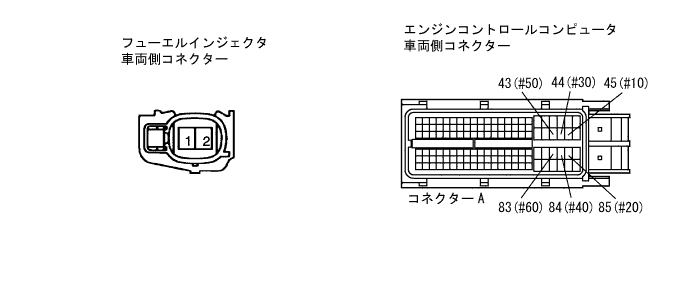
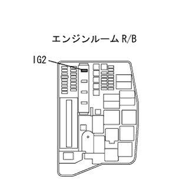

EFI System (2GR-FE) Fuel Injector Circuit |

| Step 1 | Inspect Wire Harness and Connector (Power Source System) |
 |
for reference.Disconnect the fuel injector assembly connector.
Turn IG ON.
Using SST (Toyota electrical tester), measure the voltage between the terminals.
| Tester Connection | Condition | Standard |
|---|---|---|
| 2 (+B) - Engine ground | IG ON | 11 to 14 V |
Turn IG OFF.
|
| ||||
| OK | |
| Step 2 | Inspect Fuel Injector Assembly |
for reference.
|
| ||||
| OK | |
| Step 3 | Inspect Wire Harness and Connector (Fuel Injector Assembly - Engine Control Computer) |
for reference.
Disconnect connector A of the engine control computer.
Using SST (Toyota electrical tester), measure the resistance between the terminals. (see)
| Tester Connection (Terminal Symbol) | Condition | Standard |
|---|---|---|
| A45 (#10) - Terminal 1 | Always | Below 1 Ω |
| Tester Connection (Terminal Symbol) | Condition | Standard |
|---|---|---|
| A45 (#10) and terminal 1 - Other terminals and body ground | Always | 10 kΩ or higher |
| Terminal 2 - Other terminals and body ground | Always | 10 kΩ or higher |
|
| ||||
| OK | ||
| ||
| Step 4 | Inspect Fuse (IG2 Fuse) |
 |
Remove the IG2 fuse from the engine room R/B.
Using SST (Toyota electrical tester), measure the resistance between the terminals.
| Tester Connection | Condition | Standard |
|---|---|---|
| IG2 Fuse | Always | Below 1 Ω |
|
| ||||
| OK | |
| Step 5 | Inspect Integration Relay (IG2 Relay) |
ReferenceInstall the IG2 fuse.
Remove the integration relay from the engine room R/B.
 |
Using SST (Toyota electrical tester), measure the resistance between the terminals.
| Tester Connection | Condition | Standard |
|---|---|---|
| A1 - B4 | Battery voltage applied between C2 and C3 | Below 1 Ω |
|
| ||||
| OK | ||
| ||